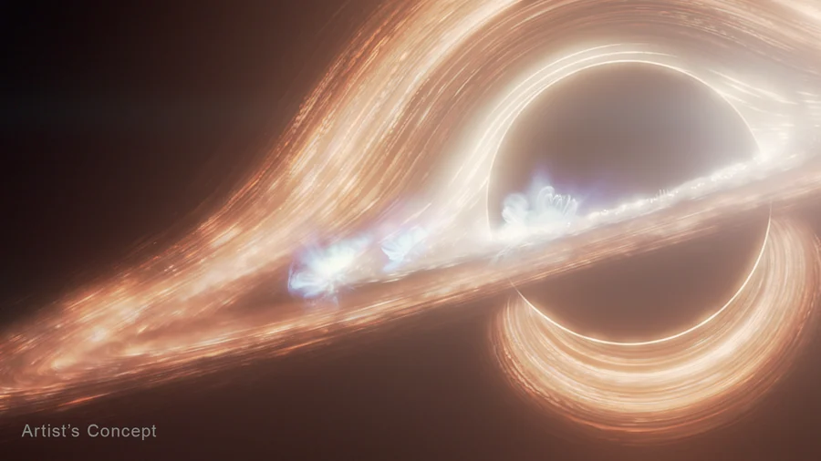

1915'te Einstein genel görelilik denklemlerini yayımladığında, denklemlerin kaçınılmaz bir çözümü olduğunu fark etti: uzay-zamanın o kadar eğilebileceği, ışığın bile içinden çıkamayacağı bölgeler. Einstein bu sonucu kabul etmek istemedi ve "gerçekte böyle nesneler oluşamaz" diye not düştü. Yanılıyordu. Bugün NASA'nın Chandra, Hubble, NICER ve James Webb uzay teleskopları onlarca kara deliği aktif olarak izlemektedir. Samanyolu'muzun merkezinde, Güneş'in 4 milyon katı kütlesinde Yay A* (Sagittarius A*) adını verdiğimiz bir dev kara delik bulunmaktadır. Ve 6 Temmuz 2026 itibarıyla bilim insanları yeni bir çığır açıcı keşfi tartışmaktadır: Paderborn ve Weizmann Enstitüsü'nün ortak çalışması, Hawking ışımasının laboratuvar koşullarında daha önce düşünüldüğünden çok daha basit bir mekanizmayla ortaya çıktığını gösterdi.
Kara Delik Nedir? Temel Tanım ve Anatomisi
NASA'nın resmi tanımına göre kara delik, çekim kuvvetinin o kadar aşırı yoğunlaştığı bir uzay-zaman bölgesidir ki içinden hiçbir şey — ışık dahil — kaçamaz. Bu olağanüstü yoğunluk, kütlenin son derece küçük bir hacme sıkıştırılmasından kaynaklanır; Güneş'in kütlesini yaklaşık 3 km yarıçaplı bir küreye sığdırdığınızda bir kara delik elde edersiniz. NASA Imagine the Universe kaynaklarına göre kara deliğin iki temel bileşeni vardır:
⭐ Kara Deliğin Anatomisi — NASA Science, Mart 2026
- Singülarite (Tekillik): Kara deliğin merkezinde maddenin teorik olarak sonsuz yoğunluğa ve sıfır hacme sıkıştığı nokta. Burada fizik yasaları çöker; genel görelilik kendi sınırına ulaşır. NASA'ya göre burası "her şeyin son durağıdır."
- Olay Ufku (Event Horizon): Kara deliğin "yüzeyi" sayılabilecek sınır — fiziksel değil, geometrik bir sınır. Bu noktanın içinde kurtulma hızı ışık hızını aşar; dolayısıyla içeri giren hiçbir şey geri dönemez. Olay ufkunun boyutu Schwarzschild yarıçapı ile belirlenir.
- Akresyon Diski (Accretion Disk): Kara deliğin etrafında spiral çizerek içeri düşen gaz ve tozdan oluşan parlak disk. NASA Science'a göre kara deliğin görünen ana ışık kaynağı bu diskdir. Disk maddesi olay ufkuna yaklaştıkça ışık hızına yakın hıza ulaşır; Einstein'ın görelilik etkisiyle bize doğru dönen taraf daha parlak ve mavi, uzaklaşan taraf daha sönük ve kırmızı görünür.
- Korona: İç akresyon diskinin üzerinde, milyar derecedeki seyrek, türbülanslı manyetik parçacık bulutu. Yüksek enerjili X-ışını kaynağıdır; şekli ve özellikleri hâlâ araştırılmaktadır.
- Rölatif Jetler: Bazı kara deliklerden manyetik alanlar aracılığıyla olay ufkunun iki kutbundan fırlayan ışık hızına yakın madde ve enerji akışları. M87*'deki jet 3.000 ışık yılı uzunluğundadır.
- Foton Halkası (Photon Ring): Olay ufku gölgesinin kenarında beliren ince ışık halkası — ışığın kara delik etrafında defalarca yörüngede döndükten sonra kaçtığı bölge.
- Olay Ufku Gölgesi: Gerçek olay ufkunun yaklaşık iki katı büyüklüğünde karanlık bölge; 2019 ve 2022'de EHT tarafından görüntülendi.
NASA Science'ın Anatomi sayfasında vurgulandığı üzere kara delikleri doğrudan görmek mümkün değildir — ışığı ne yayarlar ne yansıtırlar. Astronomlar onları çevrelerindeki madde üzerindeki etkilerinden, akresyon diskinin ışımasından, gravitasyonel dalga sinyallerinden ve komşu yıldızların yörüngelerinden tespit eder.
Kara Deliklerin Türleri: Dört Kategori
NASA Science Types sayfasına (Mart 2026) göre astronomlar kara delikleri kütlelerine göre dört ana kategoriye ayırır:
🌍 Kara Delik Türleri — NASA Science & National Geographic 2025–2026
| Tür | Kütle Aralığı | Oluşum | Örnek |
|---|---|---|---|
| Yıldız Kütleli (Stellar-mass) |
~3 – birkaç yüz Güneş kütlesi | 20+ Güneş kütlesindeki yıldızların çekirdeğinin çökmesi (süpernova) | Cygnus X-1; Samanyolu'nda tahminen 100 milyon adet |
| Orta Kütleli (Intermediate-mass) |
100 – 10.000+ Güneş kütlesi | Kesin bilinmiyor; yıldız birleşmeleri veya erken evren süreçleri | GW190521 birleşmesi → 142 Güneş kütleli (LIGO, 2019); 50.000 Güneş kütleli Hubble adayı |
| Süper Kütleli (Supermassive) |
Yüz binler – milyarlarca Güneş kütlesi | Her büyük galaksinin merkezinde; tam oluşum mekanizması araştırılıyor | Yay A*: 4 milyon Güneş kütlesi; M87*: 6,5 milyar; Holmberg 15A: 40+ milyar |
| Primordiyal (İlksel) (Primordial) |
Asteroid kütlesinden büyük kütlelere kadar (teorik) | Big Bang'in ilk saniyelerindeki aşırı yoğunluk dalgalanmaları | Henüz doğrudan gözlemlenmedi; Hawking tarafından önerildi |
NASA'nın Imagine the Universe kaynağında açıklandığı üzere Samanyolu'nda şimdiye kadar yaklaşık 50 onaylanmış veya şüphe duyulan yıldız kütleli kara delik tespit edilmiş; ancak sadece galaksimizde 100 milyona kadar bulunduğu tahmin edilmektedir. Büyük galaksilerin neredeyse tamamının merkezinde süper kütleli birer kara delik barındırdığı artık genel kabul görmektedir.
Kara Delikler Nasıl Oluşur?
NASA'nın açıklamasına göre yıldız kütleli kara deliklerin oluşumu şu şekilde gerçekleşir: Güneş'ten 20 kat ya da daha fazla kütleye sahip bir yıldız nükleer yakıtını tükettiğinde, çekirdeği kendi ağırlığıyla içe doğru çöker. Bu çöküş bir süpernova patlamasını tetikler ve yıldızın dış katmanlarını uzaya fırlatır. Geride kalan çekirdek, bilinen hiçbir kuvvetin durduramayacağı kadar yoğunlaşırsa kara deliğe dönüşür — yaklaşık 3 Güneş kütlesi bu dönüşüm için gereken eşiktir.
Süper kütleli kara deliklerin kökeni ise hâlâ açık bir araştırma alanıdır. NASA Science, evrenin ilk milyar yılında bazı süper kütleli kara deliklerin zaten oluştuğunu gösterdiğini aktarıyor. Bunların erken evrende çöken süper kütleli yıldızlardan başlayıp ardından akresyon ve galaksi birleşmeleriyle büyüdükleri düşünülüyor. Galaksi boyutu ile merkezdeki kara delik kütlesi arasındaki güçlü korelasyon, ikisinin evriminin birbirine derinden bağlı olduğuna işaret ediyor.
Hawking Işıması: Kara Delikler Tamamen Siyah Değil
1974 yılına kadar kara delikler "nihai kozmik süpürge" olarak görülüyordu — içine giren hiçbir şeyin çıkamadığı mutlak karanlık nesneler. O yıl Cambridge Üniversitesi'nden Stephen Hawking, kuantum alan teorisini kara delik fiziğiyle birleştirerek çarpıcı bir sonuca ulaştı: Kara delikler tamamen kara değil. Olay ufkuna yakın bölgede kuantum süreçleri nedeniyle zayıf bir termal ışıma yayarlar.
Hawking ışımasının mekanizması şöyle açıklanır: Kuantum mekaniğine göre "boş uzay" gerçekten boş değildir; sürekli olarak sanal parçacık-antiparçacık çiftleri oluşur ve hemen yok olur. Olay ufkunun tam sınırında böyle bir çift oluştuğunda, bir parçacık olay ufkunun içine düşebilirken diğeri dışarı kaçar — ve bu kaçan parçacık gerçek radyasyon olarak gözlemlenebilir. Kara delik bu süreçte kütle kaybeder ve çok uzun bir zaman diliminde tamamen buharlaşır.
"Hawking ışıması sıcaklığı kara deliğin kütlesiyle ters orantılıdır: küçük kara delikler sıcak, süper kütleli olanlar ise kozmik mikrodalga arka planından bile soğuktur."
⚛ Hawking Işımasının Temel Gerçekleri
- Önerildiği yıl: 1974 — Stephen Hawking, Nature dergisinde yayımladı
- Sıcaklık formülü: T = ℏc³ / (8πGMk) — kütle arttıkça sıcaklık düşer
- 1 Güneş kütleli kara deliğin buharlaşma süresi: ~10⁶⁷ yıl (evrenin yaşının katrilyonlarca katı)
- Kozmik mikrodalga arka planı sıcaklığı: 2,7 K — mevcut yıldız kütleli kara delikler bundan daha soğuk; bu nedenle şu an net kütle kaybetmiyorlar
- Gözlenme durumu: Astrofiziksel kara delikler için henüz doğrudan tespit edilemedi (çok zayıf sinyal); laboratuvarda optik analog sistemler ve Bose-Einstein yoğuşmaları ile ölçüldü
- Bilgi paradoksu: Hawking ışıması termal göründüğünden içeri giren madde hakkında bilgi taşımıyor görünür — bu "bilgi paradoksu" fiziğin en büyük açık problemlerinden biri
- Temmuz 2026 gelişmesi: Paderborn ve Weizmann Enstitüsü, doğrusal olmayan dalga kılavuzu sistemiyle olay ufku modelini oluşturdu ve Hawking ışımasının önceki teorilerden çok daha basit bir mekanizmayla ortaya çıktığını gösterdi
Hawking ışıması yalnızca kara deliklerle sınırlı değildir. Radboud Üniversitesi'nden Heino Falcke, Michael Wondrak ve Walter van Suijlekom'un 2024'te yayımladıkları çalışma, aynı kuantum sürecinin nötron yıldızları dahil diğer astronomik nesnelere de uygulandığını ortaya koydu. Evrenimizdeki her şey, çok çok yavaş da olsa, bu yolla buharlaşıyor olabilir.
Kara Deliklerin Evrendeki Rolü: Galaksilerden Zaman Dokusuna
1. Galaksi Evrimi ve Geri Besleme Mekanizması
Süper kütleli kara deliklerin yalnızca galaksi merkezlerindeki birer dev olmadığı, galaksilerin evrimini aktif olarak şekillendirdiği artık bilim çevrelerinde geniş kabul görüyor. NASA'nın Chandra X-ışını gözlemevi ve diğer teleskopların topladığı verilere göre aktif süper kütleli kara delikler (aktif galaksi çekirdekleri — AGN) muazzam miktarda enerjiyi akresyon diski ışıması ve rölatif jetler yoluyla galaksinin gazına ve çevresine pompalar. Bu "geri besleme" etkisi, galaksideki yeni yıldız oluşumunu ya bastırır ya da tetikler — kara deliğin galaksisiyle ortak bir evrim geçirdiğinin kanıtıdır.
2. Rölatif Jetler: Kozmosun En Güçlü Enerji Fışkırtıcıları
Ocak 2026'da Astronomy & Astrophysics dergisinde yayımlanan ve Olay Ufku Teleskobu işbirliğinin sonuçlarını aktaran çalışma, M87* kara deliğinin jetinin kaynağına ışık tuttu. Çalışmada kara deliğin gölgesi ile 3.000 ışık yılı uzunluğundaki jetin tabanı arasındaki bağlantı ilk kez görüntülenerek kanıtlandı. Olay ufkunun yalnızca onda biri kadar uzakta, sıkıştırılmış bir emisyon bölgesinden fırlatılan bu jet, manyetik alan konfigürasyonu ve kara deliğin dönme enerjisinin özgün bir kombinasyonundan güç alıyor. Science Times'ın Nisan 2026 tarihli analizine göre bu keşif, galaksi evrimini, kozmik enerji geri beslemesini ve erken evrenin anlaşılmasını doğrudan etkiliyor.
3. Gravitasyonel Dalga Fabrikaları
İki kara deliğin birleşmesi, uzay-zamanı titreştiren gravitasyonel dalgalar üretir. LIGO ve Virgo gözlemevleri 2015'ten bu yana 90'dan fazla birleşme olayı tespit etmiştir. Bu dalgaların ölçülmesi, hem kara deliklerin kütlelerini hem de spin parametrelerini belirlemek için güçlü bir araç sunmaktadır. GW190521 birleşmesi, 142 Güneş kütleli bir orta kütleli kara delik ürettiğinden, yıldız kütleli ile süper kütleli arasındaki "kara delik kütlesi boşluğu"nun nasıl köprülendiğine ilişkin önemli ipuçları verdi.
4. Uzay-Zamanı Bükmek: Gravitasyonel Mercek Etkisi
Kara deliklerin aşırı kütleçekimi, çevrelerinden geçen ışığın yolunu büker — buna gravitasyonel mercekleme (gravitational lensing) denir. Uzaktaki galaksilerin, süper kütleli kara deliğin önünden geçen ışığı nedeniyle çarpık ya da çoğaltılmış görüntüleri, kozmologların hem kara delikleri hem de karanlık madde dağılımını haritalandırmasına olanak tanır. NASA'nın Hubble ve James Webb teleskopları bu etkiyi düzenli olarak gözlemlemektedir.
Olay Ufku Teleskobu: Kara Delikleri Görüntülemek
Nisan 2019'da insanlık tarihinde ilk kez bir kara deliğin görüntüsü yayımlandı: M87 galaksisinin merkezindeki dev, 6,5 milyar Güneş kütleli M87*. Kızıl turuncu bir halka ortasında karanlık bir leke. Bu halka aslında kara deliğin olay ufku gölgesiydi; çevresindeki ışık ise yüzlerce milyon dereceye ulaşan akresyon diskinin parlaması ve gravitasyonel merceklenmeyle biçimlenmiş foton halkasından oluşuyordu.
Mayıs 2022'de EHT, bu kez Samanyolu'nun kendi merkezindeki kara deliği — Yay A* (Sagittarius A*) — görüntüledi. Bu çok daha zor bir görevdi; çünkü Yay A*, M87*'den 1.000 kat daha küçük olduğundan gaz ve tozun olay ufkunun çevresinde tur süresi yalnızca dakikalar mertebesindeydi ve görüntü sürekli titreşiyordu. EHT ekibi bu sorunun üstesinden gelmek için yüzlerce anlık görüntüyü birleştirdi.
"Yerküre büyüklüğündeki sanal bir teleskopla, New York'tan bir Viyana menüsünü okuyabilecek kadar yüksek çözünürlüğe ulaştık."
2025–2026 Güncel Keşifler ve Gelişmeler
🔹 Kara Delik Bilimindeki Son Gelişmeler
- Ocak 2026 — M87* jet kaynağı: EHT, kara deliğin gölgesiyle 3.000 ışık yıllık jetin tabanı arasındaki bağlantıyı ilk kez görüntüledi. (Astronomy & Astrophysics, 28 Ocak 2026)
- Mart 2026 — Oxford BlackHolistic Konferansı: Yıldız kütlelisinden milyarlarca Güneş kütlesine kadar tüm kara deliklerden akan akresyon ve jetlerde ortak ölçekleme örüntüleri tespit edildi; yeni araştırma yolları belirlendi.
- Nisan 2026 — Singülarite fiziği: Science Times, EHT verileri ve GRMHD simülasyonlarını birleştiren yeni çalışmayı derledi; M87*'nin manyetik alan geometrisi ile kara delik spini arasındaki bağlantı daraltıldı.
- Haziran 2026 — ScienceDaily: Hawking ışıması yerine nötrino fabrikası güçlendirilen kara delik bulgusuna ilişkin yeni çalışma yayımlandı; beklenen kara delik yerine nötrino kaynağı tespit edildi.
- 6 Temmuz 2026 — Paderborn & Weizmann: Doğrusal olmayan dalga kılavuzu sisteminde olay ufku analog modeli oluşturuldu; Hawking ışımasının önceki varsayımdan çok daha basit bir mekanizmayla ortaya çıktığı gösterildi.
- James Webb (2025–2026): Evrenin ilk milyar yılında zaten dev kara deliklerin bulunduğuna dair yeni kanıtlar; erken evren süper kütleli kara delik oluşum modelleri revize ediliyor.
- ngEHT (Gelecek): Yeni nesil EHT hedefleri: kara delik spinini ölçmek, SMBHs'in birleşmesini gözlemlemek, ergosfer içinde kare sürüklemeyi tespit etmek.
Kara Delikler Hakkında Yaygın Yanılgılar
"Kara delikler her şeyi emer." — Hayır. NASA'nın açıkladığına göre Güneş aniden aynı kütlede bir kara deliğe dönüşseydi, Dünya'nın yörüngesi değişmezdi. Kara delikler çekim alanları bakımından aynı kütledeki diğer cisimlerden farklı değildir; tehlikeleri yalnızca çok küçük bir alanı son derece yoğun biçimde doldurmaları, dolayısıyla çok yakına gitmenin geri dönüşsüz bir olay ufkuna geçiş anlamına gelmesidir.
"Spaghettification" yalnızca kurgu." — Gerçek bir fizik sürecidir. Olay ufkuna yaklaşan bir nesne, ayaklarına çekilen kuvvet başına çekilen kuvvetten çok daha güçlü olduğu için dikey yönde uzayıp yatay yönde sıkışır. National Geographic bu süreci "makarna gibi uzama" olarak tanımlar.
"Kara delikler sonsuza dek yaşar." — Hawking ışıması teorisi, yeterince büyük bir zaman ölçeğinde tüm kara deliklerin buharlaşacağını öngörür. Bir Güneş kütleli kara delik için bu süre 10⁶⁷ yıldır — evrenin şimdiki yaşının milyonlarca katı. Süper kütleli olanlar için çok daha uzun.
📚 Bu Yazıda Başvurulan Kaynaklar
- NASA Science (Mart 2026). Black Holes — Types. science.nasa.gov/universe/black-holes/types
- NASA Science (Mart 2026). Black Holes — Anatomy. science.nasa.gov/universe/black-holes/anatomy
- NASA (2023). What Are Black Holes? nasa.gov/universe/what-are-black-holes
- NASA Imagine the Universe. Black Holes. imagine.gsfc.nasa.gov/science/objects/black_holes1.html
- National Geographic (Ağustos 2025). What Is a Black Hole? nationalgeographic.com
- Britannica (Haziran 2026). Black hole; Hawking radiation. britannica.com
- QuantumZeitgeist (Ocak 2026). Hawking Radiation: The Definitive 2026 Guide to Black Hole Evaporation.
- Zamin.uz (6 Temmuz 2026). The Secret of Hawking Radiation: Scientists Discover a New Mechanism. — Paderborn & Weizmann çalışması
- Universe Today (Haziran 2025). Everything in the Universe Could Decay from Hawking Radiation. — Radboud Üniversitesi (Falcke, Wondrak, van Suijlekom)
- Wikipedia (Haziran 2026). Hawking radiation.
- Daily Galaxy (Ocak 2026). First-Ever Black Hole Imaged Caught Launching a 3,000-Light-Year Jet. — EHT, Astronomy & Astrophysics, 28 Ocak 2026
- Science Times (Nisan 2026). Exploring Singularity Physics from Black Holes and Accretion Disks to the Event Horizon Telescope.
- arXiv (Şubat 2026). Future Perspectives on Black Hole Jet Mechanisms. arxiv.org/abs/2602.11094
- arXiv (Haziran 2026). BlackHolistic 2026 meeting report. Oxford, Mart 2026 konferansı.
- ScienceNotes (Güncelleme Mayıs 2026). Black Hole — Definition, Formation, Types, and Mysteries.
- ScienceDaily (Haziran 2026). Scientists expected a black hole but found a neutrino factory powered by stars.
- Big Think / Starts With A Bang (2022). How does Hawking radiation lead to black hole evaporation? — Ethan Siegel
- IOPscience, Journal of Physics: Conference Series (Haziran 2026). Research Methods of Hawking Radiation.
Sonuç: Karanlığın İçinden Evrenin Sırları
Kara delikler, fiziğin iki büyük sütununun — genel görelilik ve kuantum mekaniği — tam olarak bir araya gelmediği sınır noktasıdır. Singülarite bu çatışmanın sembolüdür: yasalar çöker, zaman anlamsızlaşır. Ama bu kırılma noktası aynı zamanda fırsattır; kara delikleri anlamak, fiziğin eksik parçalarını tamamlamak anlamına gelir.
Hawking ışımasının laboratuvarda analog kanıtlarla doğrulanmaya başlaması, bilgi paradoksunun çözüm yollarının aranması ve yeni nesil EHT'nin kara deliklerin spinini doğrudan ölçmeyi hedeflemesi — tüm bunlar bu alanın en heyecan verici keşiflerinin henüz önümüzde olduğuna işaret ediyor. Ve belki de en derin soru şu: Singülaritede gerçekten ne oluyor? Bu sorunun yanıtı yalnızca kara delikleri değil, uzay, zaman ve maddenin özünü de açıklayabilir.